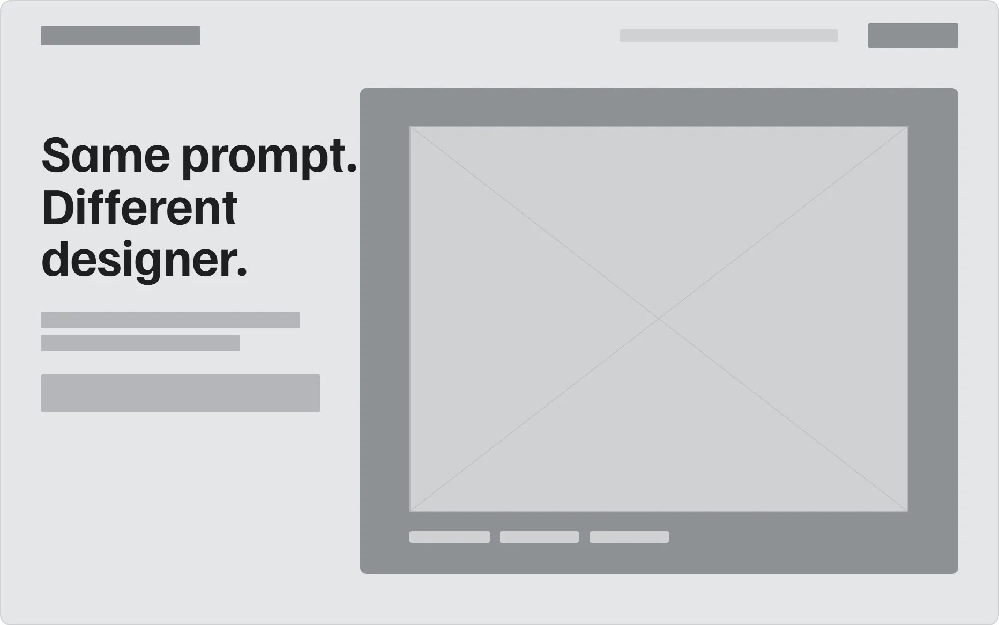
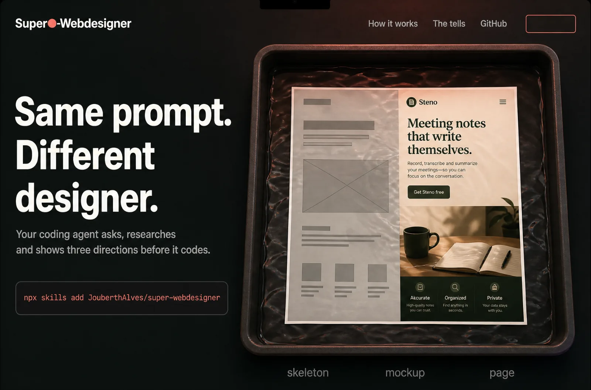
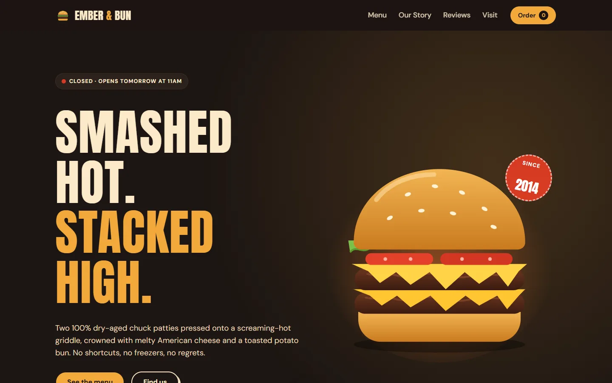
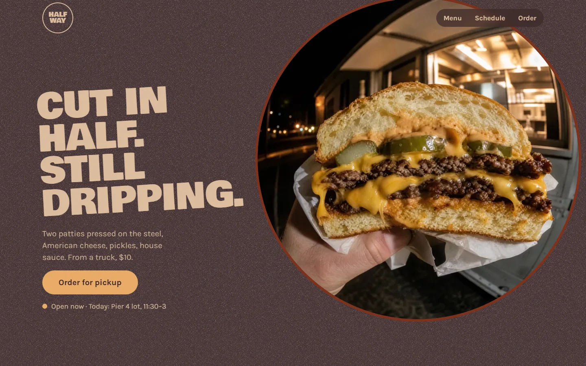

Same prompt.
Different
designer.
Your coding agent asks, researches and shows three directions before it codes.
Claude Code
npx skills add JouberthAlves/off-template-skills -g -a claude-codeCodex
npx skills add JouberthAlves/off-template-skills -a codexCursor
npx skills add JouberthAlves/off-template-skills -a cursor

skeletonmockupthis page
Build the rest of this page.
Three directions are ready. Pick one:Three directions were ready. This page is C, Darkroom Develop.
This page is C, Darkroom Develop.
One prompt. Two pages.
Build a website for a burger restaurant. Left, an agent on its own. Right, the same agent with Off-Template.


sloplint ships with the skill and ran on both pages, rebuilt on 26 October 2026 with the current skill and the same model. The person answered the brief and picked the direction. The skill page is a first screen only, at the person’s request, so it had less code to get wrong. 19 of the 20 failures on the left are colours written outside tokens.
Four stops. You decide each one.
The brief.
Four questions with options to click. The palette comes from a real object you name.
Three directions.
Grey skeletons and a coloured mockup each, after research on real sites in your niche.
The decisions.
Every choice in one block, before a line of code.
The review.
A lint at five widths, the 13 tells, and a reviewer that never saw the chat. You judge last.
The 13 tells it checks for.
- Purple or blue gradient
- Default type
- Grid background
- Three generic benefit cards
- Emoji in the copy
- Glow on everything
- The usual layout
- Generic icons
- Everything static
- 01 / 02 / 03 on a loose list
- Hard shadows and boxes everywhere
- Spec-sheet dressing
- A default AI look
Install it in your agent.
Claude Code
npx skills add JouberthAlves/off-template-skills -g -a claude-codeCodex
npx skills add JouberthAlves/off-template-skills -a codexCursor
npx skills add JouberthAlves/off-template-skills -a cursorWindsurf
npx skills add JouberthAlves/off-template-skills -a windsurfGitHub Copilot
npx skills add JouberthAlves/off-template-skills -a github-copilotClaude Code plugin
/plugin install off-template --marketplace JouberthAlves/off-template-skillsThen ask for a site the way you always do. The skill stops at the brief and waits for you.